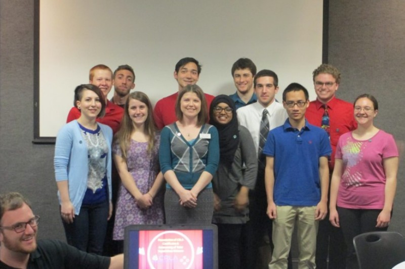

Some of my tutor ninjas and I at the 2015 Tutor Awards Ceremony
I'm a versatile ninja who has experience in two-year, four-year, and online institutional settings. I love working with college students and training them to become future ninjas. Most of all, I enjoy making writing ninjas of two-year students, whose skills are often underestimated and require a bit of unearthing.
Employment History
Graduate Teaching Assistant
Engineering Communications Program at Virginia Tech
Aug. 2015-Present
Successfully advocated for transitioning paper posters to digital posters for student presentations, a change that pleased students, the chair of MSE, and the ECP team.
Hold individual conferences with students to discuss writing revisions and goals.
Provide workshops on scholarship essay and resume writing.
Create resources for classroom writing assignments.
Learning Specialist
Towson University
Sep. 2014-Jul. 2015
Supervised, hired, and held regular meetings with graduate assistants.
Designed and conducted tutor training according to CRLA standards for over 75 peer tutors.
Organized, publicized, and conducted study skills workshop series.
Assisted in overseeing Academic Renewal Program, an alternative to academic suspension, to assist students in meeting requirements for continued enrollment and enhancing their academic study skills.
Instructional Associate
Montgomery College Writing Center
Jan. 2013-Aug. 2014
Launched Facebook page and blog
Created instructional videos on outlines, thesis statements, and citation pages for student and faculty use
Piloted highly successful and well-attended online workshops via Blackboard Collaborate
Developed materials and visual presentations for weekly workshop series
Adjunct Faculty & Writing Center Tutor
Montgomery College
Sep. 2011-Dec. 2012
Individually tutored students in writing
Used sound pedagogy to engage students in essay writing assigments
Met with students to discuss their performance, questions, and concerns about academic writing
Adjunct Faculty
Howard Community College
Aug. 2012-Dec. 2012
Used sound pedagogy to engage students in essay writing assigments
Met with students to discuss their performance, questions, and concerns about academic writing
Online Faculty
University of Phoenix
Mar. 2011-Mar. 2014
Created Jing videos to provide students additional writing feedback which met their learning needs better than written feedback alone
Provided instructions for accessing academic resources such as the Center for Writing Excellence
Maintained rigorous and discussion threads and personalized posts to address specific student concerns
Non-academic employment history provided upon request